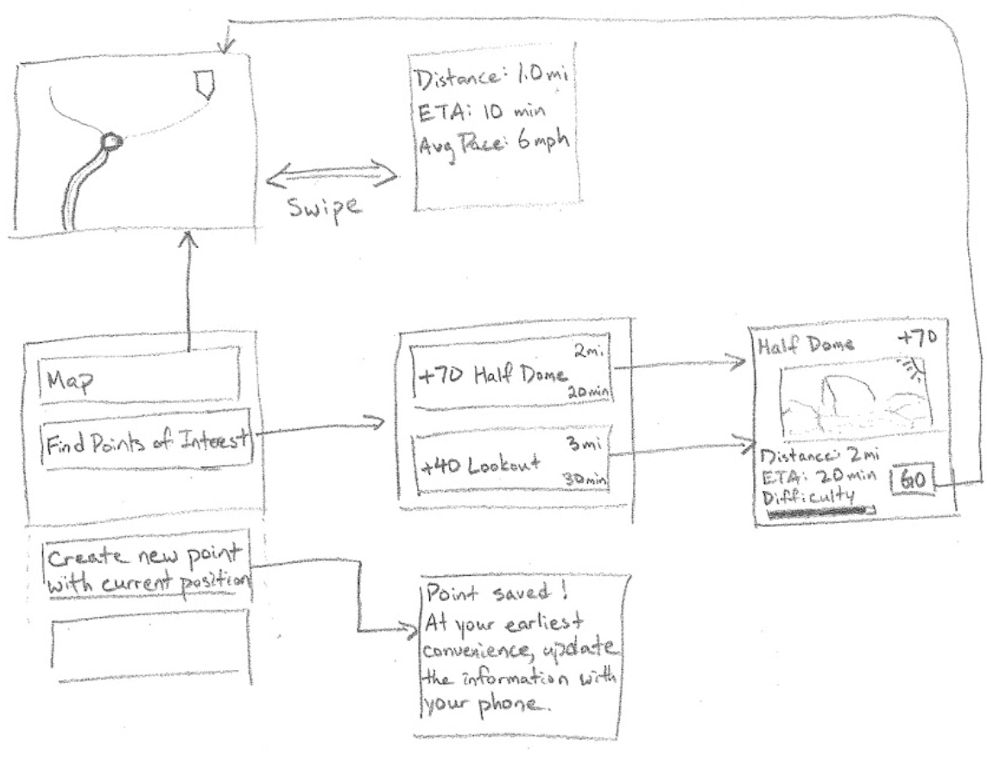
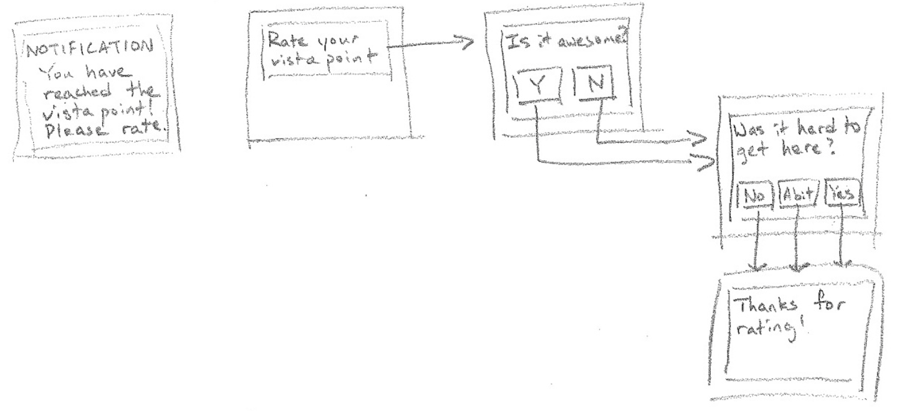
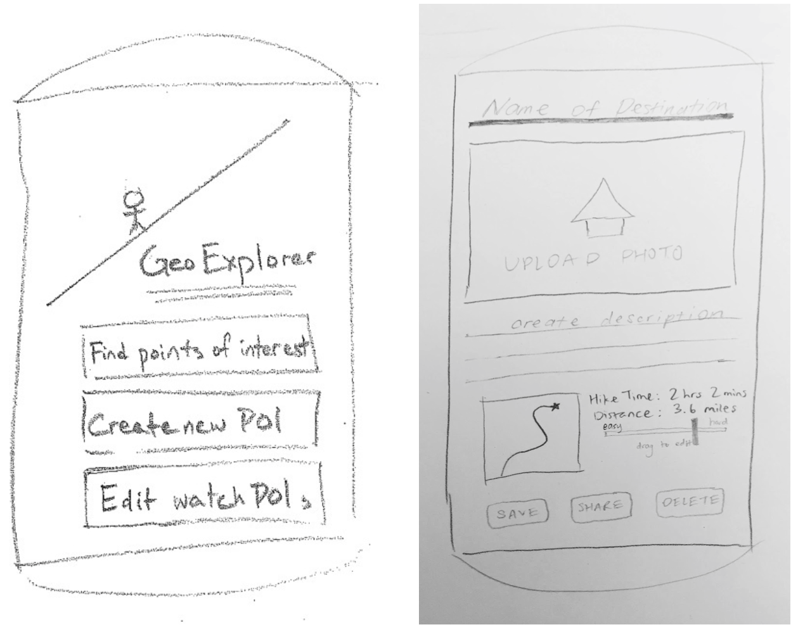
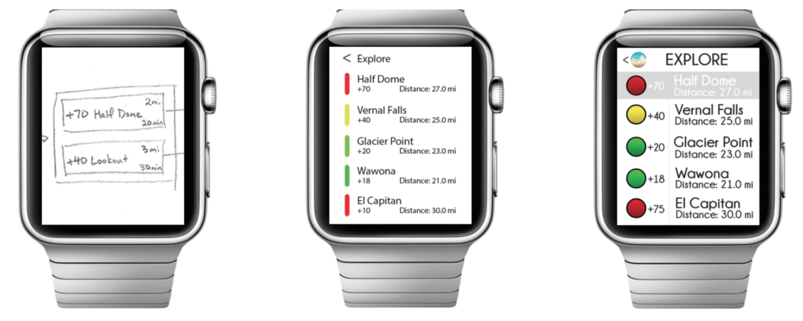
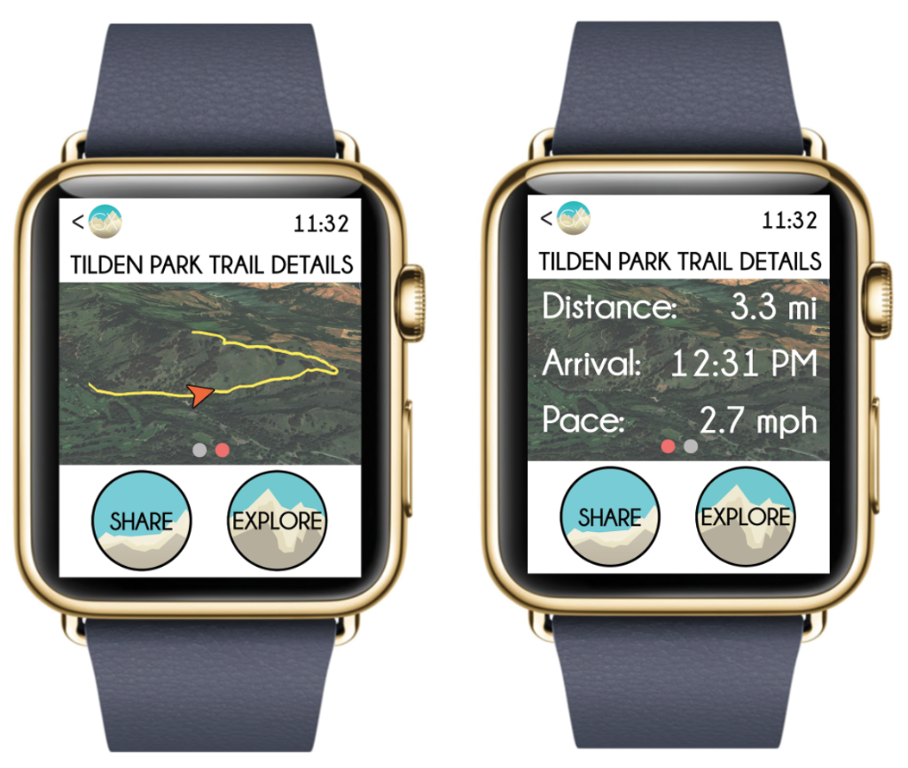
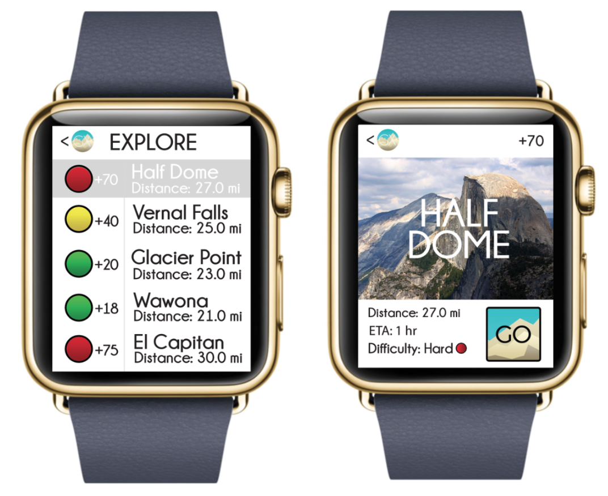
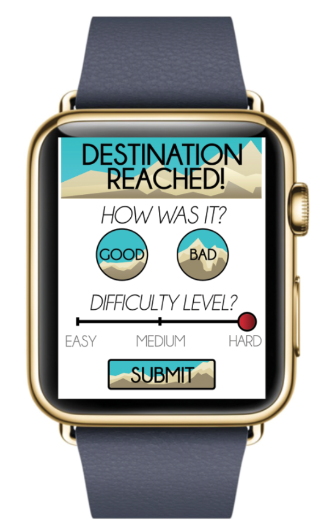

Project Partners: Reah Miyara, Charlie Pai, Kevin Hui, George Wu
GeoExplorer was our final project for User Interface Design, a Computer Science course in which we "learn[ed] to prototype, evaluate, and design a user interface," using the Qualcomm Toq smartwatch. GeoExplorer's mission is to enhance the hiking experience by providing a single platform for hikers to share and explore vistas.
I was the Product Manager of my team's product, led design, and contributed to development.
In this course, we developed our own design problem, and created an innovative solution towards this problem. We followed the Lean Startup methodology.
We decided to implement a smartwatch application that combined the networking and sharing functionalities of a social application with the practicality and functionality of a parks and trails application. Our original idea, Geocaching, already has an existing application. Instead, we wanted to differentiate ourselves and make our application available for use by a broader audience.
After doing some research on the market size for hiking in the United States, we found that as of 2013, 35 million people had engaged in hiking at least once. Hiking is a common outdoors activity, yet very few people use technology to enhance their hiking experience. We decided that this is an area that is largely unexplored. We chose to create an application for hikers, aiming to facilitate the exploration and sharing of points of interest for these users.
We made several assumptions of our product, which we further tested by .
Target User Group
While anyone can use this app, it’s geared more specifically towards hikers and adventurers. This app enhances the experience of traveling and encourages users to venture the path less traveled.
Problem Description and Context
People love hiking and taking adventures into nature. Some search for the perfect photo opportunity, others delving deep into the forest in search of wildlife or rare plants, and there are yet others who love trail running and hiking as a means of exercise. Often, great sights and hidden trails are described in a blog or by a friend, but it is often difficult to find one’s way. Other times, adventurers may discover beauty but may not have the means to share it with many people. People, whether locals or visitors to an area, need a platform where they can both find nature’s gems and share them with each other. They can even leave behind trinkets, just like geocaching. Nature lovers often don’t like to have their phones in hand while exploring the great outdoors, and also people sometimes don’t have the patience to pore through forums and yelp reviews to find a fun place to picnic or rest on a long hike. Often, newcomers to a trail or park may get lost easily, and there are few trail maps solutions that are fun to use and are user driven.
Why is a mobile phone a good solution for the problem?
A mobile phone is a good solution for the problem due to three things: 1) using the application on the go, 2) convenience and faster performance, and 3) higher user engagement. Travelers and hikers will carry their phones with them, unlike a desktop application. The point of the application is to ensure that the user is actually at the destination, which requires that the user bring the application with them. Additionally, the mobile phone is able to send notifications and reminders while on the go, which can enhance the user experience.
Why is a smartwatch a good solution for the problem?
A smartwatch is not only a good solution for this problem, it is the optimal solution for this problem due to fact that explorers/adventures are eager to find new incredible adventure destinations without stopping consistently along the way to pull out their smartphone for directions. These enthusiasts are also, more often than not, getting their hands dirty climbing, carrying equipment, and/or performing various tasks in environments unfit for a fragile smartphone. The point of the application is to also provide thrillseekers with a direction for revealing never before seen places which frequently require both their hands to establish a solid grounding and prevent injury when hiking, therefore eliminating smartphones from being their primary source of seeking and noting these newfound destinations.
In our competitive analysis, we compared our application, GeoExplorer, to three different existing applications: Yonder, National Geographic Parks, and Geocaching. Each of these applications serve a specific purpose and a different target audience. None of these applications are specific to the hiking experience and none of these applications cater only to hikers.
Yonder is an application made for outdoor adventurers. It provides an Instagram-like feed that allows you to see pictures from users around the nation. However, this application doesn’t allow you to prioritize pictures of places that are relevant to your location. Additionally, the application allows for very little exploration of the places in which these pictures were taken. This application allows you to get directions to, see the website, and call specific places, but doesn’t provide any additional functionality other than what can already be found through a simple Google search.
National Parks by National Geographic allows users to get information about the top 25 national parks. It pinpoints activities on an interactive map and allows for filtering by category and season. These activities are tagged only with their GPS location and no additional information, such as directions, is not provided for the user. The filtering of activities is a great feature; however, the application really lacks in providing users with the tools they need for easier and effortless exploration. Additionally, National Parks allows users to see lists of must-sees and must-dos, but these are created by a very limited group of National Geographic editors and may not represent the public’s opinion of these parks. This application provides very little social interaction and not much more functionality than a paper park guide.
Geocaching is an application specific for a niche hobby by the same name. Geocaching is a recreational activity in which users use GPS to find and hide “geocaches” given only their coordinates. “Geocaches” are usually plastic boxes that contain a log and little trinkets people can exchange with their own and leave their mark. This application allows users to pick a geocache and navigate to it, and share the experience once they are done. For each geocache, the application allows users to see the trail difficulty and terrain level.
We wanted to make our application specifically for hikers, and take advantage of the functionality of the smartwatch as much as we could. Our application is different from our competitors in that it is made specifically for hikers, and is used to enhance the hiking experience. We aimed to make the hiking experience as seamless and effortless as possible so that hikers would not have to fumble through several applications or perform a Google search to gain the information they wanted to receive about a hike. Our application combines directions, a pedometer, and metrics for a user’s current trail. We wanted to add a social aspect to the application and have the opinion of the user matter; thus, our application allows users to crowdsource points of interest near them in real time. Having a smartwatch application sets us apart from our competition, since bulky and fragile phones hinder the hiking experience. Our application enhances the hiking experience, never requiring the user to fumble around for their phone and waste time searching for a place to explore.
Included in this section are the initial designs meant to demonstrate the interaction flow of our application. These initial designs were created for the Qualcomm Toq smartwatch. Keeping the technical limitations of the Toq in mind, we made our interaction flow as simple as possible with the most important functionalities. Eventually, we decided to design our application for use on the Apple iPhone and Apple Watch, as this would allow for greater functionality and creativity.

Toq Smartwatch Flowchart
Initially, we designed the smartwatch functionality with the Toq watch’s deck of cards in mind. As you can see, the flowchart begins from the first sketch in the second row, a list of functions we wanted to support with GeoExplorer. Clicking the “Map” button will bring up the user’s current position as well as the highlighted directions if the user has selected a destination to go towards. In the latter case, the user can also swipe to get to “trail details,” an implementation that we kept until the very last iteration of our design cycle. “Find Points of Interest” will bring the user to a list of points organized by distance from current point. From here, clicking on any point of interest will bring the user to a summary page of that point, with a click button to begin mapping the trail. Lastly, from the top menu, the user can create a new point of interest. We quickly realized that we needed to edit much of the design details as well as the names of the buttons from this first sketch. We chose to go with the simple list style menu from this first iteration because we wanted to limit the number of interactions the user can have at first to minimize confusion and keep everything simple and minimalistic.

Destination Arrival Notification Flowchart
In our first draft of the notification, we wanted to keep the flow as simple and easy to follow as possible. The buttons are large enough to avoid the fat finger problem. This was initially designed for the Qualcomm Toq watch, which is why the interface is so limited.

Android Device Splash Screen and Point of Interest Information Entering Screen
In order to minimize the interactions with technology during a hike but maximize the sharing and social experience, we decided to move most of the details of the review to the smart phone, for the user to edit at any time. Here, we designed the buttons to allow the user to have the freedom to edit and share or even delete if they decide to later. We decided to implement difficulty settings with a sliding bar because it is an easy to recognize affordance with the labels on top.

Evolution of the Explore Page
We initially started out with a sketch of the explore page constrained to the technical limitations of the Toq watch. We later redesigned the explore page for the Apple Watch given its greater capabilities. The colors on the left were a spectrum from green to red indicating the average rated difficulty of reaching that destination. The overall functionality and visual design was good, though it was not visually consistent with the rest of the application, so our final redesign reskinned it while keeping the general design. We also removed the color spectrum, keeping it to only a solid red, yellow, and green, as we received feedback stating that it was too complex.
Jericho Swain is a car salesman in his 20’s and was on the cross country team in his high school and college years. Now, he stays in shape by hiking over the weekends, sometimes with his friends and often solo. He’s not an avid tech user but at times likes to post a picture of a view that he finds while hiking. Charlie is using the app casually to post pictures for friends and family to see, and perhaps gather a group occasionally to hike with him.
Annie Hastur is a 74 year old adventurer who enjoys travelling all around the world. She is very new to technology but feels reassured that she is able to find her way around various trails on her travels with our app. She finds using a smart phone such a nuisance, but having our app on her wrist is, in her words, “the neatest, safest way to go!” GeoExplorer has helped her find some of the most beautiful vistas, and she loves to contribute her photos as well.
Malcolm Graves really enjoy exploring. He’s constantly on the look for new vistas and spends most of his free time outdoors. Before, he didn’t really have an easy way to share the pictures; he’s accumulated so many over time he often forgets what picture pertains to what location. Now with GeoExplorer, he can save all of his images in one database and attach them to the appropriate vista review.
You can find more personas in our report.
Our group came up with three potential scenarios to demonstrate use cases for our application.
In the first scenario, a hiker wants to find a good view to make his trip worthwhile, while still arriving back home by a certain time. Currently there is no easy method for doing this while hiking, but with our application, the hiker is able to access a list of nearby vista points with an estimated time of arrival. As this will be a commonly-used function, it is readily accessible with one touch of the “Explore” button on the smartwatch, allowing the hiker to access the list extremely quickly.
In the second scenario, a hiker has reached a vista point that no one has seen before, as it lies a bit off the normal trail. This hiker wants to share this view with other people, and with our smartwatch application he is able to do so quickly without distractions. By touching “Share” and confirming his action, the hiker sets his current location as a new point of interest. The smartwatch then notifies the hiker that he can enter in the information on his phone at his earliest convenience, and the hiker continues enjoying the view without being distracted by placing the information on his phone.
This scenario demonstrates one of the key features of our application: non-distractiveness during the hike. No one wants to fumble with their phone while they are enjoying nature. Therefore, we delay entering the information until later, when the user is no longer on a hike. This design also enforces the need for the hiker to actually be in that location in order to post it on the public server.
In the last scenario, the hiker has arrived at an already-discovered vista point. After arriving, he decides that although arriving at that vista point was difficult, the view was definitely worth it, and he wants to share his sentiments with other hikers. If the hiker has previously set his destination to his current location on our smartwatch application, a notification will show up asking him to upvote or downvote the view, as well as rating the difficulty level. As no one wants to spend a long time doing this, the hiker only needs 3 touches (the up/down vote, the difficulty, and submission), to finish this task, ensuring that the rating system is not overly distracting from the view.
Description of Users Observed
The first person interviewed is a 20-year-old Pure Math major and future Marine Officer (NROTC). She likes self development and dislikes feeling stuck. Her priorities are education, family, morals/religion, and leadership/self-improvement.
The second person interviewed is a 21-year-old Chemistry Major focused on doing research. She appears fit and in-shape yet tells me she’s the exact opposite. She likes watching movies, tv shows, anime, etc. She dislikes irresponsibility. She prioritizes family above all else. She is mainly driven by her competitive nature.
The third interviewee is a 26 year old Wisconsin native. A moderate hiker, she much prefers exploring nature over exploring social media news feeds and believes in “sights over screens”! Always having a spare pair of running shoes in the trunk of her car, she enjoys taking spontaneous hikes as long as her instincts tell her it’s safe to do so.
The fourth interviewee is a 24 year old Psychology graduate student at the University of California, Berkeley originally from South Korea. She enjoys reading, exploring various eateries around the bay with friends, and maintaining a healthy lifestyle with her cute dog Fluffy. She listens to music on her phone when hiking and likes keeping an album of awesome views she finds while exploring new trails, usually through word of mouth.
There are details to a trail or region that aren’t readily accessible by hikers either because the source of information, a phone, is stowed away, or simply because it just doesn’t exist for public reference. Examples of information that are desired by hikers are directions, points of interest, distance/time to a destination or rest stop, and other social interactions.
Contextual Inquiry Description and Results
In order to observe the hikers in their most natural state we conducted our contextual analysis at one of the East Bay’s most premier hiking spots, Tilden Regional Park. We situated ourselves at the park’s epicenter so we could observe hikers of all experience levels being that this central spot contains entrances to a variety of short-looped and long-looped trails. After granting us permission to hike with and observe a part of our interviewee’s hike, we trailed our interviewee’s for a few minutes and observed their interactions with their phone and other devices.
Some of the common practices all interviewees shared were checking their phones before starting off on their hike, likely for the time in order to measure their hike duration, then immediately securing their phones away in their pockets. An observation made with all interviewees was that putting away their phone was noticeably a difficult task. After finally chiming in with each candidate all admitted that finding a comfortable position for a bulky and fragile device while hiking in tight fit workout clothes is not the easiest or most comfortable task.
All interviewees find hiking to be a form of relaxation, whether it be through the exercise or being able to capture the breathtaking views along the way. Half hiked multiple times a week, the other half hiked less frequently. All hikers take into account recommendations for new trails to hike on, except for the Marine, who hikes only on paths that ROTC uses. They all recommend hiking trails to others, even if rarely. All hikers don’t use their phones while hiking, unless they stop to take a picture or set the time. Phones have hindered some interviewees only due to them being difficult to carry. Most hikers wanted to see distance (mileage) left on a trail, time passed while hiking, and their speed. The Marine also wanted to be able to see her pulse.
One of the interviews was conducted at the Big C. While not exactly a ‘hiking’ trail, one such hiker said she preferred this location because it’s close to Latimer and is an ideal relaxation spot in between classes and work. Her favorite time to go is during “golden hour”, which is an hour before sunset, where the fields and water would appear to shine. She recommended this time and location. The setting and view was fairly important to her. She always has her phone with her to take pictures of the scene. She often hikes up with one or more friends/co-workers because she finds hiking in groups to be more fun.
The interview with the Marine was interesting because her primary reason for hiking were for reasons related to physical fitness, unlike the other interviewees; having the nice views came secondary to her. When asked why she hikes only on paths that ROTC uses, she explained that it’s because this is the path she’s trained on a few times a week for the last few academic years and it’s the one she’s familiar with. She always hikes with a group, whether it be friends or fellow ROTC members, because she doesn’t find hiking alone as enjoyable. Since health and fitness are her primary concerns, when asked what she would want on a smart watch type interface, she wanted to be able to see the distance hiked, distance left, time passed, her speed, as well as her pulse.
The interviewee from Wisconsin is distinct because she strongly advises against the use of technology while hiking. Unlike a few other interviewees, she does not believe in using one’s phone to track time, pace, or pulse. Admittingly succumbing to using her phone on rare occasions she cannot resist capturing the occasional picture if she happened to venture across a breathtaking view. As an experienced hiker she believes in exploring the path less taken, living a bit on the ‘wild side’. Seeing what nature and this beautiful earth has to offer is of utter importance to her as she believes that mankind is slowly destroying much of mother nature’s creations.
Unlike all other interviewees, the graduate student getting her PHD in psychology from Berkeley always explores trails with her loyal companion and best friend, her pet dog Fluffy. There are many people who hike with their pet dogs, “it is great motivation as animals tend to be more energetic than us lazy humans” she stated. This interviewee enjoys taking her dog to trails that allow for a leash-free hike. She finds herself often taking pictures of views, cute moments when her dog plays with a companion also on the trail, and of the sunset. She tends to hike in the early evening and therefore prefers safer trails, ones that are paved or undoubtedly recognizable, to prevent dangerous situations for both herself and Fluffy. For this reason, she will only consider exploring a new trail if another friend joins her and only if the trail was recommended to them by someone trustworthy.
After analyzing the contextual inquiry results, we came up with a few key tasks that users can perform within the application, and created a backlog, prioritizing the tasks by difficulty level (implementing easiest first).
List of Tasks
Easy Task: Upon reaching a vista point, the user should be able to rate a vista point by giving it an upvote or a downvote. Ratings are already done using tools like Yelp, but the application simplifies the process by using a smartwatch with a simpler interface with just up/downvotes.
Easy Task: Upon reaching a vista point, the user can rank the vista point’s difficulty by rating it as easy, medium, or hard. Ranking the difficulty of reaching a vista point is harder using current tools as there is no central obvious location or application for it. Having it be bundled with the application with an easy to use interface on the smartwatch ought to make it extremely easy for a user to rank.
Medium Task: Post a new place to the public with pictures and ratings; Set your current position as a new point of interest and add it to the public listing of vista points. This is a task that is typically done on websites like Yelp, though it is not a particularly easy job to do. The method of doing so on our designed application should make the process more streamlined and easier as it automatically assumes that the user is posting about a new vista point or other point of interest, rather than about restaurants and such where one needs to write reviews.
Medium Task: Discover points of interest, displaying the current rating and difficulty. This is rated as medium because current discovery and preparation processes tend to include just Googling the points of interest. By including a vista point map and listing tool the user should be able to find well-rated vista points easier, as well as quickly understanding how strenuous the path is to get there.
Hard Task: Find directions to a vista point. This is not an easily accomplishable task using current tools. Hikers and visitors generally use maps to figure out where a vista point is, which is not always easily determined. Although the application should help make this easier by highlighting how to reach it, it still seems to be a rather difficult task.
Hard Task: Show the progress on the trail in terms of time and distance left. There is no application or tool currently that performs this task. Our application will make this task automatic and extremely simple to use by making it readily available on the interface after selecting the trail or vista point.
Task Analysis
1. Who is going to use system?
This app is geared mainly towards hikers but would be an interesting experience for all pedestrians/commuters.
2. What tasks do they now perform?
Hikers mainly use their mobile phones for listening to music, taking pictures, using fitness apps to check how far they have hiked and how many calories they have burned, as well as checking the time.
3. What tasks are desired?
Hikers want to see their current progress on the trail in terms of time and distance traveled/remaining, not just pace per mile.
Other tasks include getting a calorie burn rate, number of steps taken, pace per mile and pace per trail, location of tough/steep parts of the trail, hiked trail tracking, weather. number of hikers on the trail, and safety rating of the trail.
4. How are the tasks learned?
Hikers do not generally need specialized skills or information unless the hike is particularly strenuous. Strenuous trails may need more specialized training.
5. Where are the tasks performed?
The tasks are typically performed while hiking on a trail. Tasks such as trail selection are typically done before hiking, either at the park or at home.
6. What’s the relationship between user & data?
The following user data is considered private: number of calories burned so far, hiking pace per trail and per mile, user’s favorite vista points, user’s captured photos
The following data is considered public: the trail map, vista points on the trail and their location, number of upvotes/downvotes per vista point, number of active hikers, names of hikers only if they choose to ‘check-in’
7. What other tools does the user have?
Other tools users may have include GPS navigation systems, cameras, sports watches, and maps.
8. How do users communicate with each other?
They suggest trails and vista points to each other after having been on an enjoyable hike or vice versa, they warn against hiking a specifically dangerous path.
9. How often are the tasks performed?
This varies anywhere from daily for dedicated hikers to weekly, monthly or biannually for increasingly recreational hikers.
10. What are the time constraints on the tasks?
Unless the hikes are very long, there aren’t usually time constraints. In general, hikers want to finish the path before the sunsets being that most trails are not lit to ensure the trails most natural form.
11. What happens when things go wrong?
When the app fails: they would just have to follow the trail if one exists, they would be unable to check mileage and would have to guess distance/time remaining, they could miss out on possibly amazing vista points
When other difficulties arise: would need emergency attention, possible evacuation required, possible medical attention required
Our final design included a total of five representative tasks, three of which were implemented in a high fidelity prototype. These five tasks included saving a user’s current position as a vista point, selecting a previously created vista point as a destination, viewing the current trail details (including crucial information such as distance traveled, time to destination, and current pace), constant GPS location, and user database to save profiles, reviews, etc. We decided to implement the first three of these tasks and the following screen shots detail how we choose the interaction and design to be:

Trail Map and Details Pages with Share and Explore Buttons
This is the main page the user lands on, showing a map and the share and explore buttons. A single swipe switches between the map and trail details, removing clutter from the page when the user doesn’t need to see it, which enforces minimalistic design. The share button simply saves the user’s current location to the synced mobile device as a new point of interest. The explore button leads to the explore page, which lists out close points of interest.

Explore and Destination Details Pages
The “Explore” page shows the user points of interest located around them, prioritized by popularity. The color and number next to the names of each of these points corresponds to difficulty level as well as number of upvotes for that particular vista. Red indicates “hard,” yellow indicates “medium,” and green indicates “easy.” The distance indicated for each vista point is the distance the vista is from the user. When the user clicks on a vista, it opens up a description page about that vista. This includes a picture and details of getting to the destination, including distance, estimated time of arrival, and difficulty of trail. Pressing “Go” will start the directions and take the user to the main page.
We followed the same thematic consistency in colors. We decided to omit the names of the difficulty in the explore page to achieve minimalistic design. We used red, yellow, and green as the colors to indicate difficulty since this is an affordance that is found in the real world.

Destination Reached Notification: Upvote/Downvotes and Difficulty Rating
This is the destination reached page. Following thematic consistency, we choose to use very familiar imagery and colors. Unlike certain social media platforms where users are all intimate (Facebook), we decided to have a vote down feature (BAD in this case) in the event “troll” users uploaded bad vistas. We did, however, change the difficulty rating to work in increments so that the measurements are more meaningful.
Technical challenges surrounding the actual implementation on the Qualcomm Toq device mostly consisted of lack of knowledge of the Toq API due to poor documentation. One of the main challenges was attempting to update the deck of cards on the Toq with a new CardImage. Unfortunately, we assumed that the RemoteDeckOfCardsManager’s simple update function was sufficient, when in fact it was not. Documentation on the update function for the resource store was not available, and had to be guessed when reading through the javadoc.
Other technical challenges involved working around the Toq’s technical limitations. The first was the inability to have multiple decks of cards, which we were able to work around by placing the Create Point of Interest card into the deck intended to show destinations. Second was the lack of buttons for creating a suitable “menu” for the smartwatch interface. This was worked around by using the cards as a type of “button” that would send back information to the Android device, which would then update the Toq’s DeckOfCards as necessary.
A full implementation of our project will require an implementation of a server and a database to store publically-available points of interest. It would also require a method to interact with the Google Maps API directly on the smartwatch for real-time updates on the map and trail information.
A potential problem that may come up is the lack of cell-phone reception on many hiking trails. The solution would be to have some hardware that could link directly with a GPS satellite, which theoretically has coverage everywhere.